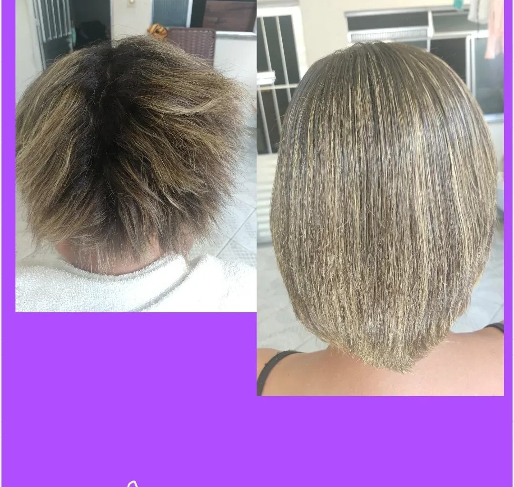
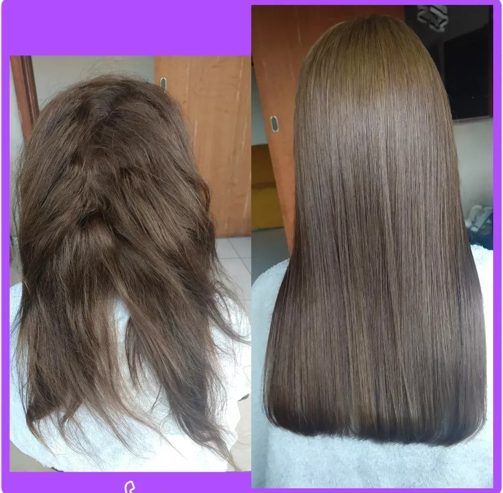
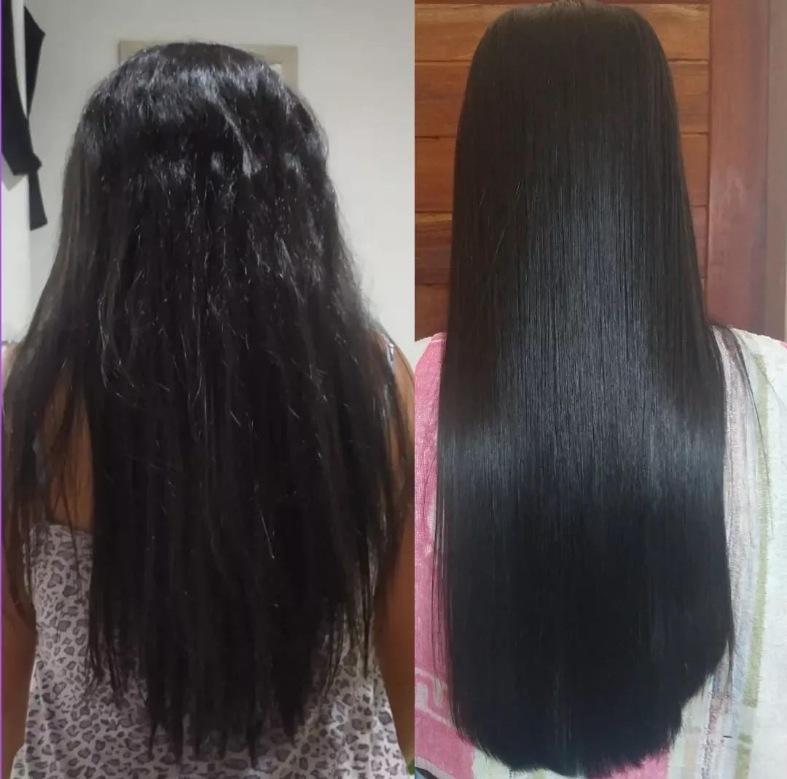

Transformações
Atendo com todo carinho e dedicação, pois desejo que toda mulher seja empoderada, linda e principalmente FELIZ
São feitas avaliações para saber a saúde do cabelo e se foram feitas algumas químicas, afim de evitar a quebra do cabelo durante ou após o procedimento.
Procedimentos de progressiva duram em torno de 4 horas, podendo ser menor ou maior o tempo, dependendo o tipo e quantidade do cabelo.
Valores são passados após avaliação presencial ou online, pois é feito uma base em cima do comprimento, textura, saúde dos fios, entre outras...